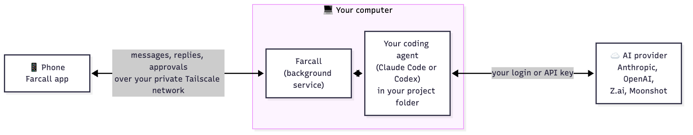

Control Claude Code and Codex from your Android phone.
They run on your own computer. You chat, watch the replies stream in, and approve every command before it runs. From anywhere, with no cloud relay.
Mac, Windows and Linux on the computer · Android on the phone · iPhone not yet



Your agent, your model
Claude Code on your Claude login, or on Z.ai's GLM or Moonshot's Kimi; Gemini through OpenRouter (preview). Codex on your OpenAI login (preview). Pick per session.
You approve every command
When the agent wants to run a command or edit a file, your phone asks first: Allow or Deny. You see what it is doing while it works.
No server in the middle
Your phone reaches your computer over your own private Tailscale network, built in: no Tailscale app to install. Chats and code stay on your machines.
More than one agent
Put two or three agents in one chat: they answer side by side and can discuss each other's answers. Update your computer's Farcall from the phone, too.
Get started
- Install Farcall on the computer.
Mac (Terminal):curl -fsSL https://github.com/eamon831/farcall-releases/releases/latest/download/install.sh | bash
Windows (PowerShell):irm https://github.com/eamon831/farcall-releases/releases/latest/download/install.ps1 | iex
Linux (x64):curl -fsSL https://github.com/eamon831/farcall-releases/releases/latest/download/install-linux.sh | bash - Follow the setup in the Farcall window: Connect, Pick your AI (sign in or paste a key), Projects folder, Pair your phone.
- Install the Android app from the QR code in setup, sign in to the same Tailscale account, and pair.
Questions
Can I use Claude Code from my phone?
Yes. Farcall runs Claude Code on your own computer and gives you a phone app to chat with it: start a session in a project, read replies as they stream, and approve or deny each command or file edit it wants to make.
Does it work with Codex, GLM, Kimi or Gemini?
Yes. Claude Code can run on your Claude login, on Z.ai's GLM, on Moonshot's Kimi, or on Gemini through OpenRouter (preview); Codex runs on your OpenAI login (preview). You pick per session, and you can put two or three agents in one chat.
Is my code sent to a server?
No. Your phone reaches your computer over your own private Tailscale network. Farcall has no server in the middle; your code and chats stay on your machines and your AI provider.
What do I need?
A Mac, Windows PC or Linux machine to run the agent, an Android phone, and one AI: a Claude account, an API key for GLM, Kimi or OpenRouter, or Codex. Farcall's setup installs what is missing.
Is there an iPhone app?
Not yet: the phone app is Android only for now.
Is Farcall free?
Yes, Farcall itself is free to download. You pay your AI provider as you normally would.